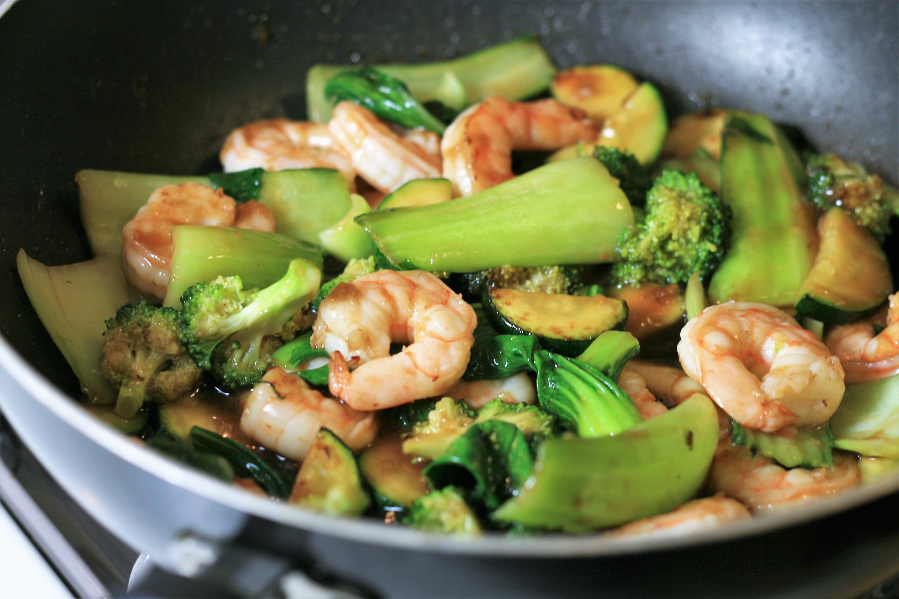

Teriyaki Shrimp and Vegetable Stir-fry

Description
Shrimp, bok choy, broccoli, and zucchini are happy together in a stir-fry that makes its own teriyaki sauce. Serve over rice or noodles for a tasty meal.
Ingredients
- 2 heads baby bok choy
- 2 tablespoons vegetable oil
- 1 tablespoon grated fresh ginger root
- ½ pound uncooked medium shrimp, peeled and deveined
- 1 cup broccoli florets
- 1 cup sliced zucchini
- 2 tablespoons soy sauce
- 2 tablespoons sweet vermouth
- 2 tablespoons brown sugar
- 2 tablespoons rice vinegar
- 1 tablespoon cornstarch